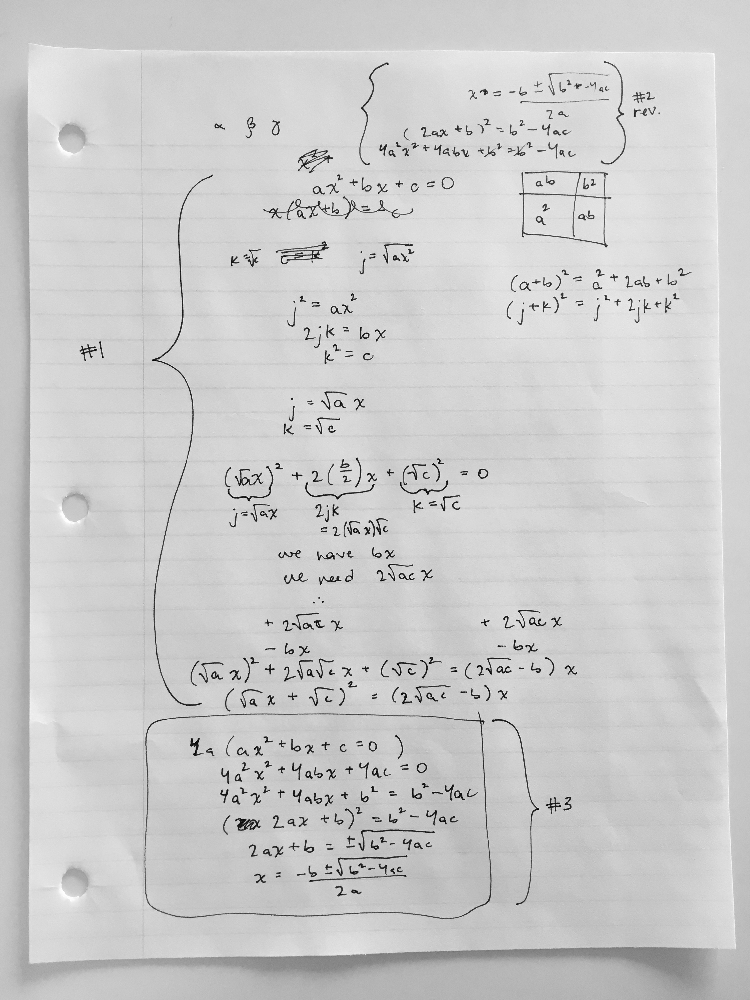
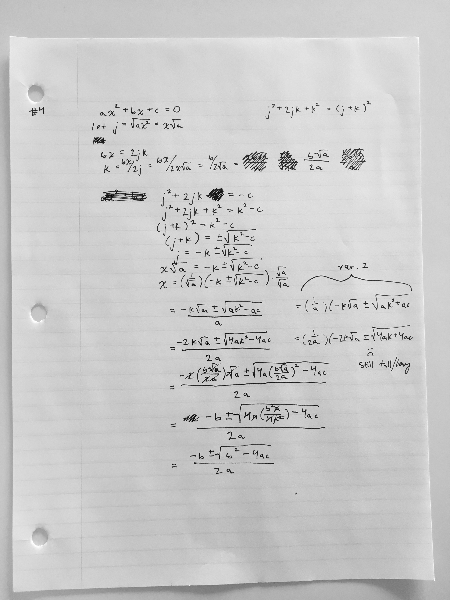
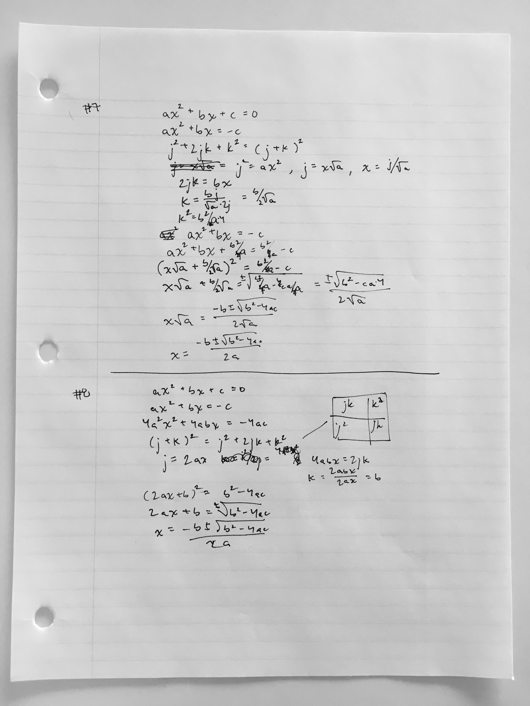

← Home
Eleven Formulations of the Quadratic Formulas
On by Jonathan Hunsucker
Aim
Find a short and simple formulation of the quadratic formula. I made multiple attempts at formulation throughout a day, and catalogued the changes made between them.
Learnings
Coming up with tidy formulations is a progression. There are multiple paths, all with the same outcome (the quadratic formula), but with different amounts of clarity, self-explanation, and ease of following along. Later formulations were shorter or involved less algebraic shuffling to settle out, but traded away clarity to achieve it. For example, Formulation #8 has a “scale by 4a” step. This creates for less shuffling later on, at the cost of pulling 4a from thin air.
Eleven formulations

The first approach failed, having not realized that c needs to be isolated in order to simplify getting into the j^2+2jk+k^2 form. After approaching the problem in reverse, in formulation #2, I realize that multiplying by 4a will help.
 Recognize that “Completing the square” will be useful here, and take
Recognize that “Completing the square” will be useful here, and take ax^2 as j^2, leading to radicals in j and k, making the middle section heavy, and dedicating the last section towards simplifying the formula.

Leave j and k in for longer, hoping that the formula will simplify a little before needing to resubstitute them. Doesn’t achieve much towards that goal.
 Formulation #5 jumps straight into finding substitute values for
Formulation #5 jumps straight into finding substitute values for j and k. It does achieve a shorter formulation, but at the expensive of a jarring substitution.

Formulation #7 is the last one with radicals in j and k. Formulation #8 introduces a “scale by 4a” step early on, letting j=2ax and k=b — something easier to work with in the middle and late sections, but another “magic” step from left field.
 Formulation #9 adds per-step descriptions. Formulation #10 is the shortest so far. Formulation #11 issued an attempt to integrate the visual representation of completing the square, but was abandoned.
Formulation #9 adds per-step descriptions. Formulation #10 is the shortest so far. Formulation #11 issued an attempt to integrate the visual representation of completing the square, but was abandoned.
Outstanding questions
- Is there a formulation where “completing the square” springs up naturally, as opposed to being brought in through epiphany or prior knowledge?
- How might people rank these formulations, in terms of their clarity?
- If “completing the square” and “equation manipulation tactics” are prerequisites for “find the quadratic formula”, what problems have “find the quadratic formula” as a prerequisite?